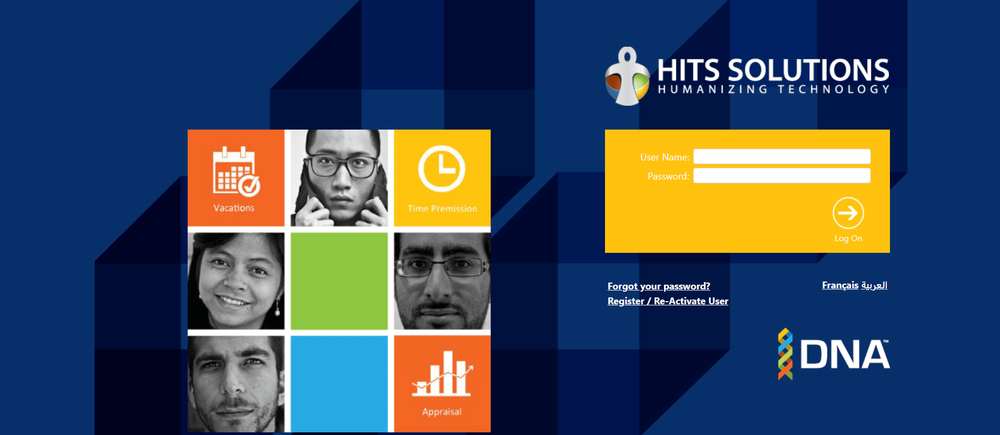

HR & Payroll · Web Platform
HITS HR & Payroll Management System
End-to-end HCM platform covering payroll automation, talent acquisition, performance management, and employee self-service for enterprises.
End-to-end HCM platform covering payroll automation, talent acquisition, performance management, and employee self-service for enterprises.

The HITS HR & Payroll platform is an advanced HCM solution designed to streamline human resource management and payroll processing for enterprises. The system provides a full suite of functionalities including employee records management, automated payroll processing, benefits administration, compliance tracking, and rich SSRS-based reporting. It aims to enhance organisational efficiency while providing a user-friendly interface for both HR administrators and employees.
As Software Development Supervisor, I led a team of 5 junior engineers, overseeing the complete development lifecycle. I managed both frontend and backend development, ensured seamless feature integration, maintained high security standards, and mentored junior team members. I also independently developed new ASP.NET and SQL features and drove performance optimisation across the platform.
Protecting sensitive employee and payroll data required advanced encryption and multi-factor authentication across all access points.
Connecting the platform with clients' existing ERP and HR systems required careful mapping, transformation logic, and extensive testing.
Mentoring and coordinating a team of 5 junior engineers while maintaining delivery timelines and code quality standards.